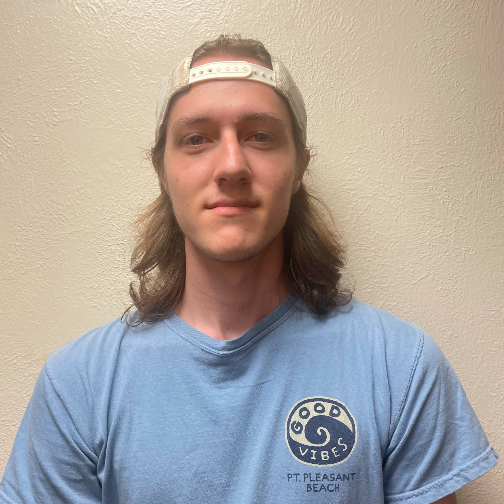
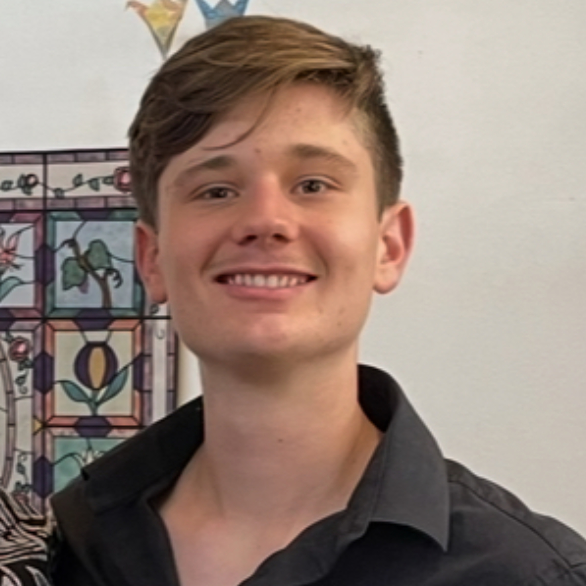

Wenbin Wan is an Assistant Professor in the Department of Mechanical Engineering at the University of New Mexico (UNM). He received his Ph.D. in mechanical engineering and his M.S. in applied mathematics from the University of Illinois Urbana-Champaign (UIUC). He earned a B.S. in mechanical engineering from the University of Missouri–Columbia. He was appointed as a MechSE Teaching Fellow at UIUC, named a CPS Rising Star by the University of Virginia. He was selected as an NM SPARK Scholar at UNM.


Team
The ONE Lab brings together students from ME, ECE, CS, and Math departments, along with high-school interns and visiting/exchange scholars and students.
We’re always seeking highly motivated and energetic individuals to join our team.
Join us
We welcome applicants prepared in controls, optimization, applied mathematics, and/or machine learning.
Current OpeningsFaculty
PhD Students
Kumar Anurag
Mechanical Engineering
Reservoir Computing
Abel Molinar
Mechanical Engineering
NSF Graduate Research Fellow
NSF RAISE Fellow
Nonlinear Filter
Seif Osama
Mechanical Engineering
Distributional Robustness
Master Students
Isaiah Candelaria
Electrical and Computer Engineering
NSF RAISE Fellow
Neural Networks
Undergrad Students

Brady Kissinger
Mechanical Engineering
UAV Tracking in VR
Joshua Barton
Mechanical Engineering
F1/10 Self-driving Car
Ankit Devarapalli
Computer Science
UAV Tracking in VR

Cuyler Gordon
Computer Science
UAV Tracking in VR

Haasika Jagirapu
Computer Science
Reservoir Computing
Interns and Visiting Scholars
You can be here
Join Us